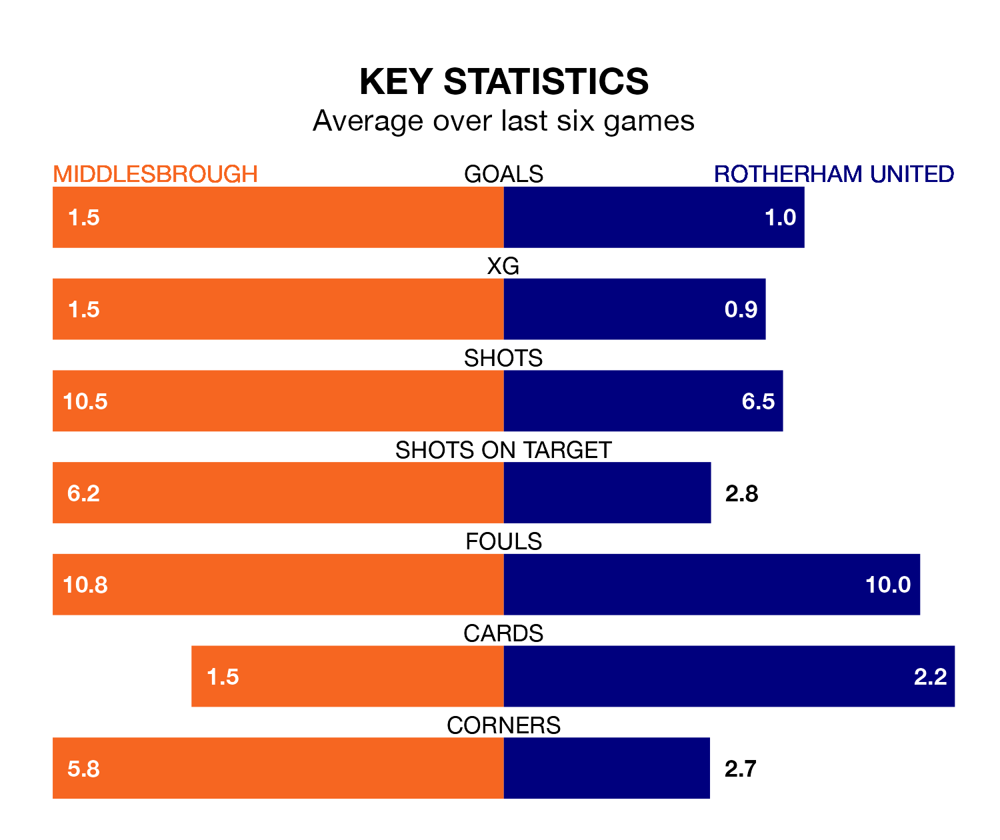

Middlesbrough are heavy favourites to keep all three points at home in Saturday's kick-off against Rotherham United.
The Boro, who sit 10th in EFL Championship with 27 games played, are priced at 1.3 to seal victory at the Riverside Stadium.
Sitting 14 places and 21 points behind them in the table, Rotherham are 10.8 to win with *Betting Company*, while the draw is at 5.4.
In the last 10 years, Middlesbrough and Rotherham have played each other on 12 occasions. Middlesbrough won six of them, Rotherham four, and they drew twice.
On average, the Boro scored 1.0 goal and the Millers 0.7 in those matches.
Their last meeting was on December 26, when Rotherham won 1-0 at home.
With 24 goals in 27 games so far this season, Rotherham are the league's third-lowest scorers with 0.9 goals per game. And they are conceding more than average, letting in 51 goals at a rate of 1.9 per game.
Middlesbrough, meanwhile, are above average scorers, with 1.5 goals per game, compared to a league average of 1.4. They have also conceded 1.5 goals per game.
The Boro are in reasonable form in EFL Championship, with four wins and two losses from their last six games.
With a win and two draws over that period, United's form is much worse – they have taken five points from 18, compared to the home team's 12.
Middlesbrough's last match was on Saturday, a 3-1 win against Millwall, with Isaiah Jones, Lukas Engel and Marcus Forss getting the goals for the Boro.
Rotherham lost 1-0 against Stoke City last time out, also on January 13.
Saturday's match will be refereed by Darren Bond, who has taken charge of seven EFL Championship games so far this season, issuing one red card and booking 32 players. He has awarded four penalties.
The last Rotherham game Bond refereed was the 3-0 loss away at Leicester City on December 23. He is yet to oversee a match featuring Middlesbrough this season.
Updated: 10:02 (UTC), 19/01/24